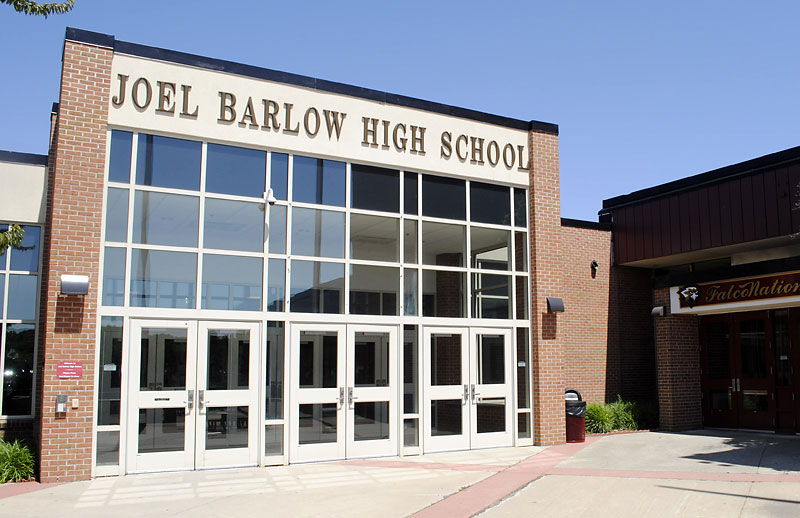
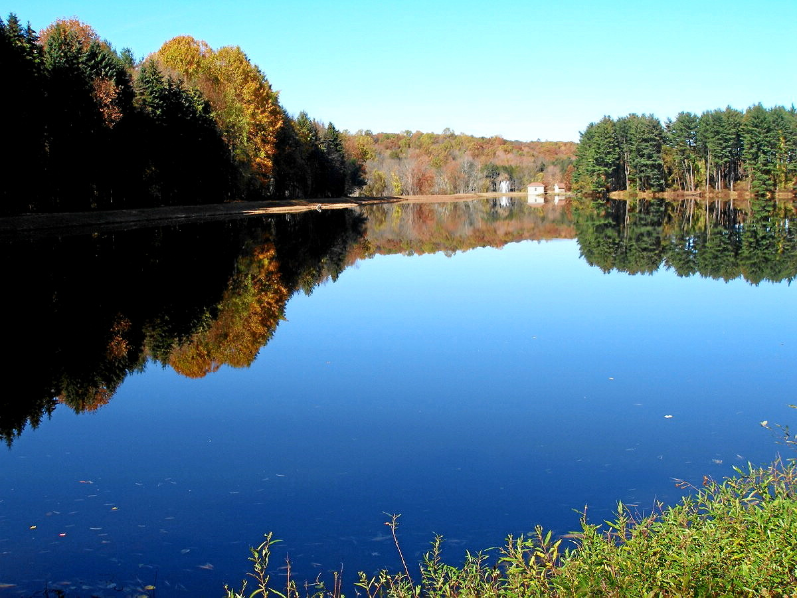

While living in Easton, I attended Joel Barlow High School which is actually
in Redding, the town over.

Easton is about an hour from New York City, three hours from Boston, and just
10-15 minutes from the ocean (if the Long Island sound counts as the ocean)

Growing up in a rural area gave me the opportunity to enjoy nature to its
fullest. My whole life I have loved the wilderness and have observed the outdoors during my
free time. My love for nature is one of my many reasons for attending UMaine!